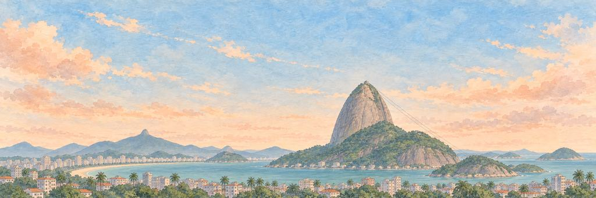

Rio de Janeiro game pesawat kertas
Naik kereta gantung ke Gunung Sugarloaf.
Bukit-bukit muncul cepat. Lewati kereta gantung, lalu penari samba.
Sungai Januari
Pelaut Portugis memasuki teluknya pada Januari 1502 dan, mengira itu muara sungai, menamainya Rio de Janeiro, "Sungai Januari". Sejak 1808 istana Portugis memerintah kekaisarannya dari sini, satu-satunya kali sebuah ibu kota Eropa berada di luar Eropa. Rio tetap jadi ibu kota Brasil sampai 1960.
“Aku akan berlayar masuk ke teluk dan salah mengira juga.”
Landmark-nyaGunung Sugarloaf
Sugarloaf adalah kubah granit dan kuarsa setinggi 396 meter yang menjulang langsung dari air di mulut Teluk Guanabara. Namanya kemungkinan berasal dari cetakan tanah liat berbentuk kerucut tempat gula dikirim, saat Brasil menjual gula ke seluruh dunia. Para pendaki masih memanjat dinding batunya yang gundul.
Kawasan
Kota Rio de Janeiro dihuni sekitar 6,2 juta orang pada sensus 2022. Di Ipanema, pada 1962, Tom Jobim dan Vinicius de Moraes menulis "The Girl from Ipanema" di sebuah bar di Jalan Montenegro, sambil melihat seorang gadis setempat berjalan ke pantai. Lebih dekat ke pusat kota, saluran air tua bernama Arcos da Lapa punya 42 lengkungan dalam dua baris. Saluran ini dibuka pada 1750 untuk membawa air bersih ke kota. Sejak akhir abad ke-19, di atasnya lewat trem kuning yang naik ke distrik Santa Teresa di puncak bukit.
Pesisir dan teluk
Jalur pejalan kaki Copacabana membentang sekitar 4 km di samping pantai. Pada 1970 Roberto Burle Marx menata trotoarnya dari batu hitam dan putih dengan pola gelombang, yang diambil dari trotoar tua Portugis. Di seberang Teluk Guanabara, Jembatan Rio-Niterói dibuka pada 4 Maret 1974. Panjangnya 13,29 km, dan sekitar 8,8 km di antaranya berada di atas air.
Cakrawala kota
Cakrawala Rio dibentuk oleh gunung-gunungnya. Di puncak Corcovado, pada ketinggian sekitar 700 meter, berdiri Kristus Penebus. Patung ini setinggi 30 meter, rentang lengannya 28 meter, dan selesai pada 1931. Pada 2007 patung ini terpilih sebagai salah satu Tujuh Keajaiban Dunia Baru. Kereta gantung ke Sugarloaf, yang pertama di Brasil, beroperasi sejak 1912. Pada 2012 Rio menjadi kota pertama yang dicatat UNESCO sebagai lanskap budaya perkotaan, karena cara puncak-puncak gunung dan pesisirnya bertemu.
Waktu terbaik untuk melihatnya
Pergilah ke batu Arpoador, di antara Copacabana dan Ipanema, saat matahari terbenam. Pada sore hari di musim panas, orang ramai berkumpul di sana, dan banyak yang bertepuk tangan saat matahari tenggelam.
Siapa yang menjaga keinginan di Rio de Janeiro.
Penjaga Elite bangun lebih dulu; Penjaga Boss menjaga keinginan itu sendiri. Kenai titik lemah mereka untuk BONK!, berikan pukulan terakhir untuk KO!, lalu masing-masing tersenyum dan membungkuk.
-
Elite


Kereta Gantung
Bergantung pada satu kabel · Penjaga Sugarloaf
Saat dibuka pada 1912, kereta gantung Sugarloaf, menurut kebanyakan catatan, baru jalur kereta gantung penumpang ketiga di dunia, setelah yang di Spanyol dan Swiss. Insinyur Augusto Ferreira Ramos memimpikannya pada 1908. Gerbong pertamanya dari kayu, seperti trem Rio, dan membawa 22 orang melintasi udara di atas Teluk Guanabara.
Kereta gantung itu bergoyang di kabelnya. Kereta gantungnya berayun keras dan berderak di kabelnya. Kereta gantungnya berhenti berayun dan menggantung diam.
“Aku mau duduk di dekat jendela dan tak berkedip.”
-
Boss

Penari Samba
Tak pernah ketinggalan ketukan · Penjaga Sambadrome
Deixa Falar, "Biarkan Mereka Bicara", sering disebut sekolah samba pertama, didirikan di kawasan Estácio, Rio, pada 1928 oleh para musisi termasuk Ismael Silva. Sejak 1984, sekolah-sekolah itu berparade di Sambadrome karya Oscar Niemeyer, masing-masing dengan ribuan penari, penabuh, dan kereta hias menjulang.
Penari samba mulai berputar, lengkap dengan bulu-bulunya. Penarinya salah langkah, lalu menemukan ketukannya lagi. Penarinya menyelesaikan putaran dan membungkuk.
“Aku mau menari sepanjang parade tanpa berhenti.”
Rio de Janeiro tamat. Gunungnya berbentuk seperti gula batu, persis namanya.
- Kereta gantungnya bergoyang seperti ayunan.
- Penarinya terus berputar sampai membungkuk.
Pesawat tiba di Rio de Janeiro dari New York. Tampilan pesawat khasnya adalah jejak Konfeti Karnaval.